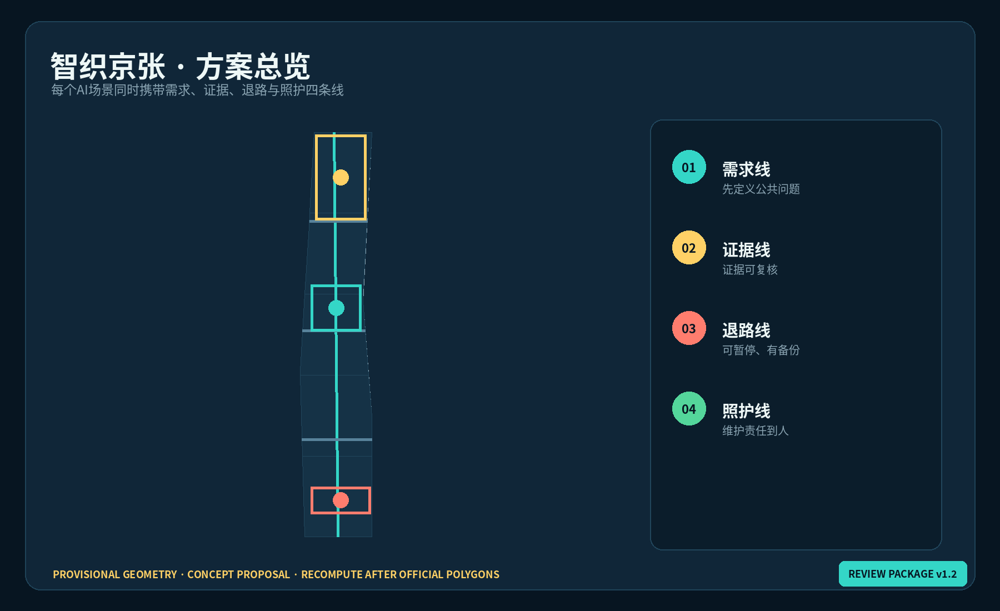
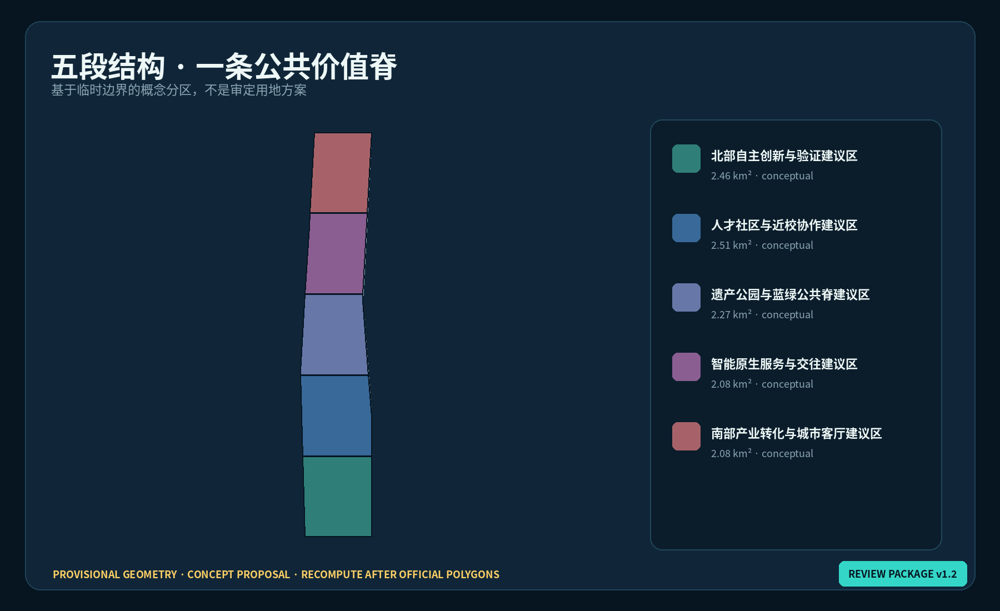
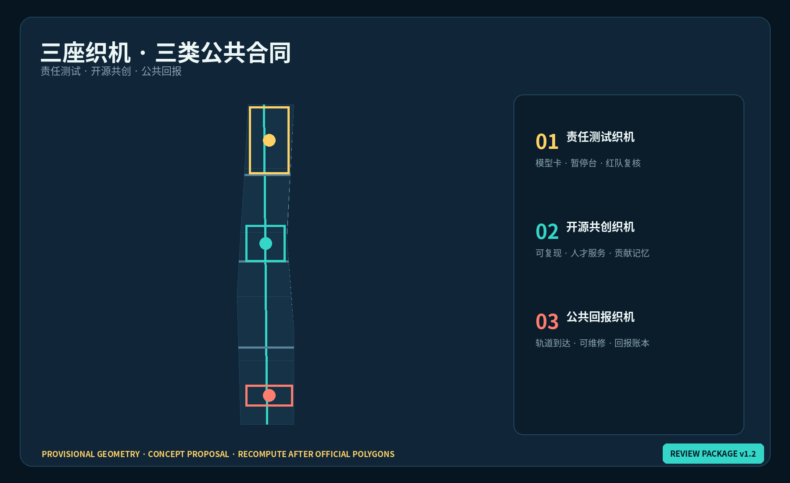
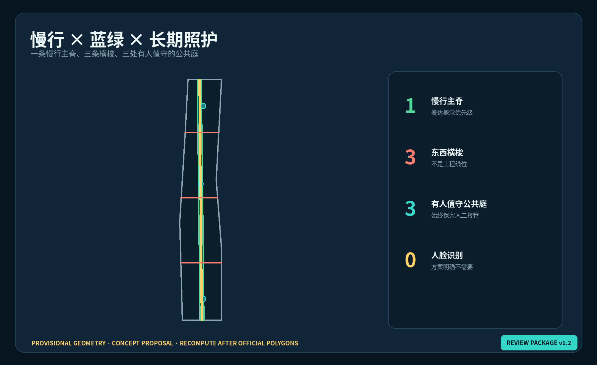
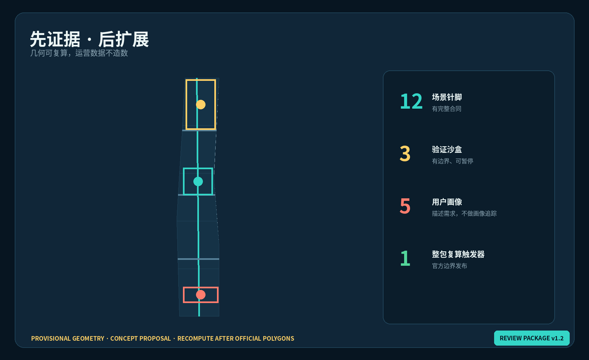

核心指标
总览地图
总览地图把证据、设计与照护责任放在同一画面。
三层范围
43.6 km² / 11.4 km² / 368.4 ha · provisional geometry
重点区域
Zhongzhiyuan · AI Origin · Dazhongsi
用地分区
五个共享边界的概念结构分区。
交通慢行
一条慢行主脊与三条东西横梭。
蓝绿公共空间
一条绿脊与三处有人值守的公共庭。
建筑
九个待测绘空间原型，不对应现实拆改留决定。
更新项目
W-01 — W-08 · reversible first · recompute after official polygons
AI 场景
十二个可暂停场景针脚与三个有边界验证沙盒。
证据图板





任务覆盖
agent.1—agent.6：品牌、生态、场景、公共空间、文化与长期运营均已映射至 compliance_matrix.json。
| 图层 | 作用 | 状态 |
|---|---|---|
| site_boundary / key_areas | 约束 | provisional |
| land_use / roads / green / public / buildings / phasing | 设计证据 | 可复算 |
| metrics / matrices | 审计 | 结构化 |
来源与假设
正式任务判断使用官方公告、清权任务书和已登记专业标准；外部案例仅为背景比较。容积率、高度、权属、市政和工程条件仍待正式资料。
自检状态
页面完全离线，不加载远程瓦片、脚本、字体、表单、追踪或API；人类与专业团队拥有最终判断权。